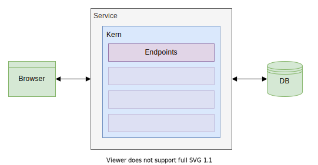
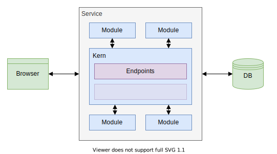

Rich Client: Server Anwendung
### Überleitung
#### Verantwortlichkeiten - JSF - View-Management - Rendering - Validation - State-Management - Events - Routing - Data-Management - Persistence
#### Verantwortlichkeiten - Rich Client - View-Management - Rendering - Ensurance - State-Management - Events - Routing
#### Verantwortlichkeiten - Webservice - Data-Management - Validation - Persistence
### Webservice
#### Webservice - Stateless - Kein Zustand - Keine Session - Anfrage ausschließlich mit fachlichen Informationen
#### Webservice - Stateless - Keine nicht-persistenten Informationen - Transparentes Caching ausgenommen - Persistierung in Datenbank oder Dateisystem - Transparente Datenbank oder Dateisystem
#### Webservice - Skalierbar - Abhängig von ausschließlich externen Informationen - Eingaben des Clients - Daten der Persistence - Instanzen sind identitätslos - Dynamisches hoch-/runterfahren von Instanzen
#### Webservice - Untrusting - Validierung aller Eingaben - Isolierung aller Eingaben - Durchgehende Prüfung der Authorisierung
### Architekturen
#### Architekturen - Monolith - Modulith - Services - Microservice
Architekturen - Monolith

#### Architekturen - Monolith - Alle Aspekte der Anwendung in einem Projekt - Keine Trennung zwischen Fachlichkeiten - Keine externen Abhängigkeiten zur Laufzeit
Architekturen - Modulith

#### Architekturen - Modulith - Unterteilung der Anwendung in Fachlichkeiten - Auslagerung der Fachlichkeiten in Module - Module definieren öffentliche Schnittstellen - Auslagerung in Form von Package, Modul, Projekt - Keine Auslagerung zur Laufzeit - Zusammengeführt durch Kern
Architekturen - Services
#### Architekturen - Services - Modulith als Kern - Auslagerung einzelner Module in Services - Services haben eigene Datenhaltung
Architekturen - Microservices
#### Architekturen - Microservices - Auslagerung jedes Modules in Services - Expliziter Kern durch implizite Abhängigkeiten zwischen Services ersetzt - Services replizieren Daten in eigener Datenhaltung
### Vergleich
#### Vergleich - Kriterien - Initialaufwand - Wartungsaufwand - Betriebsaufwand - Personalaufwand
#### Vergleich - Kriterien - Abhängigkeit - Ausführbarkeit - Testbarkeit - Skalierbarkeit - Zuverlässigkeit - Ausfallsicherheit
#### Vergleich - Initialaufwand - Aufsetzten der Architektur
#### Vergleich - Initialaufwand Monolith Modulith Services Microservices Gering Mittel Mittel Hoch
#### Vergleich - Wartungsaufwand - Einführung neuer Features - Entfernung alter Features - Behebung von Fehler - Aktualisierung der Abhängigkeiten - Refactoring
#### Vergleich - Wartungsaufwand Monolith Modulith Services Microservices Hoch Mittel Mittel Gering
#### Vergleich - Betriebsaufwand - Betreiben der Services - Instandhaltung der Umgebung - Behebung von Störungen
#### Vergleich - Betriebsaufwand Monolith Modulith Services Microservices Gering Gering Mittel Hoch
#### Vergleich - Personalaufwand - Teamgröße sowie Teamanzahl - Erhöhte Komplexität erfordert mehr Personal - Mehr Personal erfordert erhöhte Flexibilität
#### Vergleich - Personalaufwand Monolith Modulith Services Microservices Gering Mittel Mittel Hoch
#### Vergleich - Abhängigkeit - Trennung der Fachlichkeiten - Freiheit der Technologien
#### Vergleich - Abhängigkeit Monolith Modulith Services Microservices Hoch Hoch Mittel Gering
#### Vergleich - Ausführbarkeit - Ausprobieren neuer Features - Nachstellen von Fehler - Aufsetzen der Umgebung
#### Vergleich - Ausführbarkeit Monolith Modulith Services Microservices Hoch Hoch Mittel Gering
#### Vergleich - Testbarkeit - Validierung der Korrektheit - Absichern von Entwicklungen
#### Vergleich - Testbarkeit Monolith Modulith Services Microservices Gering Mittel Mittel Hoch
#### Vergleich - Skalierbarkeit - Reaktionsfähigkeit bei Fluktuationen - Effiziente Nutzung der Resourcen
#### Vergleich - Skalierbarkeit Monolith Modulith Services Microservices Keine Gering Mittel Hoch
#### Vergleich - Zuverlässigkeit - Störungsanfälligkeit - Kommunikationsabbrüche - Fehlerhafte Zustände - Netzwerke, Hardware, Software
#### Vergleich - Zuverlässigkeit Monolith Modulith Services Microservices Hoch Hoch Mittel Hoch
#### Vergleich - Ausfallsicherheit - Ausfallsicherheit - Redundanz
#### Vergleich - Ausfallsicherheit Monolith Modulith Services Microservices Gering Gering Mittel Hoch
#### Vergleich - Anforderungen Monolith Modulith Services Microservices Unbekannt - Einfach Einfach - Umfangreich Umfangreich - Komplex Komplex
#### Vergleich - Teamgröße Monolith Modulith Services Microservices Klein Klein - Groß Mittel - Groß Groß - Mehrere
#### Vergleich - Zusammenfassung {placeholder:comparison_table}
#### Vergleich - Fazit - Anforderungen und Teamgröße limitieren jeweils Architekturmöglichkeiten - Architektur aus Deckung der Architekturmöglichkeiten wählen - Teamgröße muss sich mit Anforderungen decken
#### Vergleich - Fazit - Monolith für unbekannte Projekte - Modulith für mehr Wartbarkeit - Services für Skalierbarkeit - Microservices für Zuverlässigkeit
### Spring
#### Spring - Application Framework - Dependency-Injection-Container
#### Spring-Boot - Basiert auf Spring - Erweitert um Java EE - Convention-over-Configuration - Annotation-Base Configuration - Spring ursprünglich eigentlich XML
#### Bootstrap - Aufbau des Objektgraphen - Zwei primäre Quellen für Objekte - Components - Configurations - Objektgraph ist normalerweise statisch - Objektgraph erlaubt dynamische Erweiterung
### Bootstrap
#### Bootstrap - Verwendung - `@SpringBootApplication` zur Deklaration des Einstiegspunkt - `@ComponentScan` für komplexere Umstände
#### Bootstrap - Beispiel ```java @SpringBootApplication public class MySpringApplication { public static void main(String[] args) { SpringApplication.run(MySpringApplication.class, args); } } ```
#### Bootstrap - Details `@SpringBootApplication` - `scanBasePackages` Base-Package für alle Configurations und Components - Default ist das aktuelle Package
#### Components - Direkte Deklaration von Objekten - Erzeugung durch den Dependency-Injection-Container
#### Components - Verwendung - `@Component` zur Deklaration - `@Order` zur Definition der Präzedenz
#### Components - Beispiel ```java @Component public class MyComponent { ... } ```
#### Components - Aliase - `@Controller` für Endpoints - `@RestController` für ReST-Endpoints - `@Services` für Services - `@Repository` für Datenbankschnittstellen
#### Configurations - Indirekte Deklaration von Objekten - Sowie Ändern und Erweitern bestehender Objekte - Aufruf durch den Dependency-Injection-Container
#### Configurations - Verwendung - `@Configuration` zur Deklaration einer Konfiguration - `@Bean` zur Deklaration eines Objektes - `@Order` zur Definition der Präzedenz
#### Configurations - Beispiel ```java @Configuration public class MyConfiguration { @Bean public MyComponent createComponent(){ ... } } ```
#### Referenzierung - Benötigt Aufruf durch Dependency-Injection-Container - Auflösung der Referenzen über Typ - Mehrfach vorhandene Objekt über Namen ggf. Classifier - Boostrap scheitert wenn Referenz nicht auslösbar - keine entsprechendes Objekt - mehrere entsprechende Objekte
#### Referenzierung - Verwendung - `@Autowired` zur Markierung eines Parameters
#### Referenzierung - Beispiel ```java @Component public class MyComponentWithDependency { public MyComponentWithDependency(@Autowired MyRequiredComponent component){ ... } } ```
#### Referenzierung - Beispiel ```java @Configuration public class MyConfiguration { @Bean public MyComponentWithDependency createDependantComponent(@Autowired MyRequiredComponent component){ ... } } ```
#### Referenzierung - Details `@Autowired` - `required` für optionale Objekte
### Spring Schichten
#### Spring Schichten - Frontend - Middleware - Backend
#### Controller - Schnittstelle zur Außenwelt - Abstraktes Konstrukt - Verschiedene Arten von Schnittstellen möglich (ReST, GraphQL etc.)
#### Controller - Einordnung - Frontend - Referenziert Services - Wird von niemanden referenziert
#### Controller - Verwendung - `@Controller` zur Deklaration
#### Rest-Controller - Konkrete Ausprägung eines Controllers - ReST basiert - Definiert die Endpoints der Anwendung
#### Rest-Controller - Verwendung - `@RestController` zur Deklaration
#### Rest-Controller - Verwendung - `@RequestMapping` zur Definition des Endpoints - `@PathVariable` für Pfad-Variablen - `@QueryParam` für Query-Parameter - `@RequestBody` für Bodies - `@ResponseStatus` für besondere Http-Status
#### Rest-Controller - Beispiel ```java @RestController @RequestMapping(path = "/notes", produces = MediaType.APPLICATION_JSON) public class MyNoteController { ... } ```
#### Rest-Controller - Beispiel Notizen holen `GET /notes` Notizen suchen `GET /notes?q={search}`
#### Rest-Controller - Beispiel ```java @RequestMapping(method = RequestMethod.GET) public List<Note> getNotes( @RequestParam(name = "q", required = false) String search ) { ... } ```
#### Rest-Controller - Beispiel Notiz anlegen `POST /notes`
#### Rest-Controller - Beispiel ```java @RequestMapping(method = RequestMethod.POST) public Note createNote(@RequestBody NoteProposal proposal) { ... } ```
#### Rest-Controller - Beispiel Notiz ändern `PUT /notes/{note}`
#### Rest-Controller - Beispiel ```java @RequestMapping(path = "/{note}", method = RequestMethod.PUT) public Note updateNote( @PathVariable("note) Long noteId, @RequestBody NoteProposal proposal ) { ... } ```
#### Rest-Controller - Beispiel Notiz ändern `DELETE /notes/{note}`
#### Rest-Controller - Beispiel ```java @RequestMapping(path = "/{note}", method = RequestMethod.DELETE) public Note deleteNote( @PathVariable("note) Long noteId, @RequestBody NoteProposal proposal ) { ... } ```
#### Rest-Controller - Beispiel Anhang holen `GET /notes/{note}/attachment/{attachment}`
#### Rest-Controller - Beispiel ```java @RequestMapping( path = "/{note}/attachment/{attachment}", method = RequestMethod.GET, produces = MediaType.APPLICATION_OCTET_STREAM_VALUE ) public byte[] getAttachment( @PathVariable("note") Long noteId, @PathVariable("attachment) String attachmentId ) { ... } ```
#### Rest-Controller - Details `@RequestMapping` - `path` Pfad ink. Pfad-Variablen - `method` Erwartete Methode - `consumes` Erwarteter Content-Type - `produces` Erzeugter Content-Type
#### Service - Implementiert Businesslogik - Oftmals durch ein Interface abstrahiert
#### Service - Einordnung - Middleware - Referenziert Repositories und andere Services - Wird von Controller und Services referenziert
#### Service - Verwendung - `@Service` zur Deklaration
#### Service - Beispiel ```java @Service public interface MyNoteService { ... } ```
#### Service - Beispiel ```java @Service public class MyNoteServiceImpl implements MyNoteService { ... } ```
#### Repository - Implementiert Datenbankschnittstelle für eine Entity - Abstraktes Konstrukt - Verschiedene Arten von Datenbankschnittstelle möglich (JPA, ElasticSearch etc.)
#### Repository - Einordnung - Backend - Referenziert andere Repositories - Wird von Services referenziert
#### Repository - Verwendung - `@Repository` zur Deklaration
#### JPA-Repository - Basiert auf Java-Persistence-API - Implementation per Proxy - Erweiterung durch Annotationen
#### JPA-Repository - Verwendung - `@Repository` zur Deklaration - `@Query` zur Definition komplexer Queries
#### JPA-Repository - Beispiel ```java @Repository public interface MyNoteRepository extends JpaRepository<Note, Long> { ... } ```
#### JPA-Repository - Beispiel ```java List<Note> findAll(); ```
#### JPA-Repository - Beispiel ```java Note findById(Long id); ```
#### JPA-Repository - Beispiel ```java Note findByNameAndDescription(String name, String description); ```
#### JPA-Repository - Beispiel ```java @Query("SELECT n FROM Notes n WHERE n.tag IN (:tags) AND n.creationDate >= :timestamp") Note findWithTagsAfter(String[] tags, OffsetDateTime timestamp); ```
#### JPA-Repository - Better Practice - Vielzahl an vordefinierten Operationen - Wrapper-Klasse für explizite Schnittstellen - Mehr Aufwand - Mehr Konsistenz - Projekt-spezifisches Wording - Vermeidung von `Optional` - Keine ungewollten Operationen
#### JPA-Repository - Beispiel ```java @Repository public class MyNoteRepository { private @Autowired MySpringNoteRepository delegate; public @Nullable Note find(@NotNull Long id) { return delegate.findById(id).orElse(null) } } ```
### TODO Anwendung
#### TODO Anwendung - Anforderungen - TODOs abfragen - TODO anlegen - TODO als Done markieren - TODO löschen
#### TODO Anwendung - Anforderungen TODOs abfragen `GET /todo`
#### TODO Anwendung - Anforderungen TODO anlegen `POST /todo`
#### TODO Anwendung - Anforderungen TODO als Done markieren `PUT /todo/{id}`
#### TODO Anwendung - Anforderungen TODO löschen `DELETE /todo/{id}`